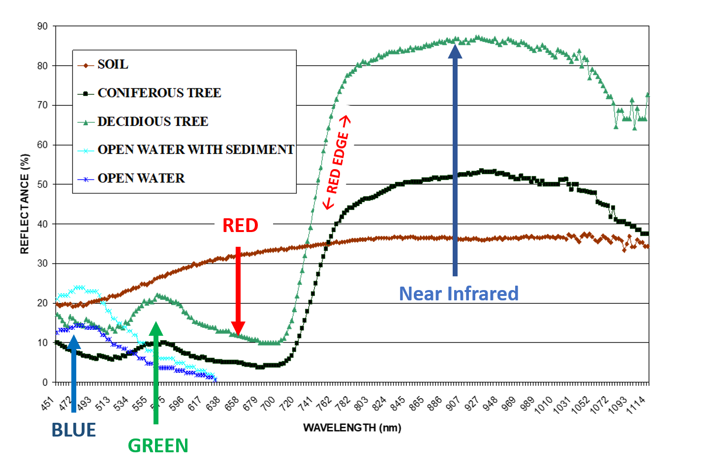
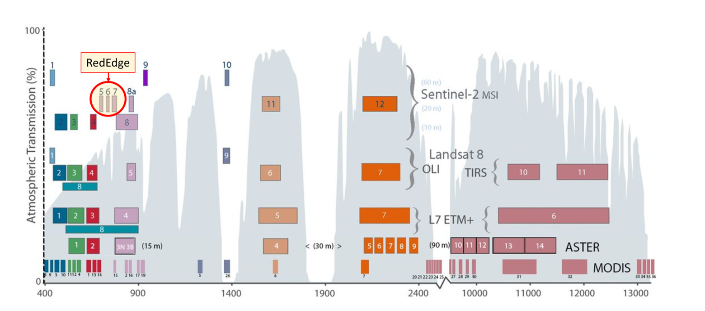
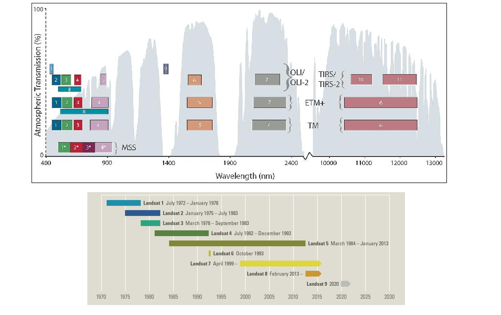
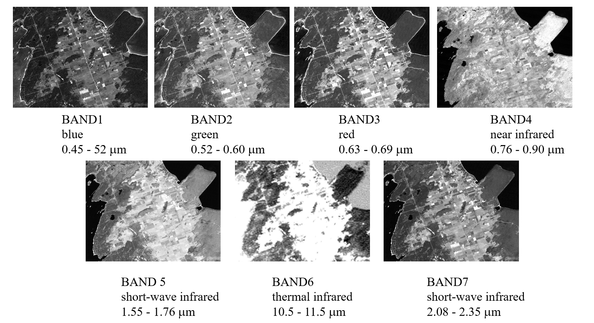

Remote Sensing and Image Analysis
Overview
This course introduces the basic interpretation and measurement of physical, biological, and cultural features from satellite and aerial imagery. Basic photogrammetry concepts will be examined and practiced in scale determination, height, and measurement. Other concepts introduced include understanding the electromagnetic spectrum, working with raster data, geometric correction, atmospheric correction, image classification techniques, and understanding how atmospheric conditions affect the quality of imagery.
Visible and Red Near Infrared Spectral Responses of Common Earth Targets
As a part of our program of study, we were asked to create a data collection model in ArcGIS Survey123 to input and store a mix of qualitative and quantitative tree data. This included unmodified parameters such as the species of tree, the percentage of deadwood in the canopy, and the tree's longitude and latitude coordinates, as well as a calculated field for the tree's diameter at breast height (which required circumference as an input). We collected data on over 100 trees, which was collated with data from the rest of our colleagues in order to create a final dataset containing over 1000 total trees located in different parts of the country.
Commonly Employed Satellite Multispectral Sources For Earth Observation Mapping and Monitoring
- Landsat 7 and 8 (NASA/USGS)
- Sentinel 2A/2B (ESA)
- ASTER – (Advanced Spaceborne Thermal Emission and Reflection Radiometer) NASA, Japan's Ministry of Economy, Trade and Industry (METI)
- MODIS – (Moderate Resolution Imaging Spectroradiometer) - NASA
The Sensors and Spectral Bands On-Board the Various Landsat (1 - 8) Satellites (1972 – Present) 48 Years of Global Imagery!
THE SEVEN BANDS OF LANDSAT THEMATIC MAPPER (TM) BRUCE PENISULA, ONTARIO
Note the Near Infrared Response in the Forested Areas.
